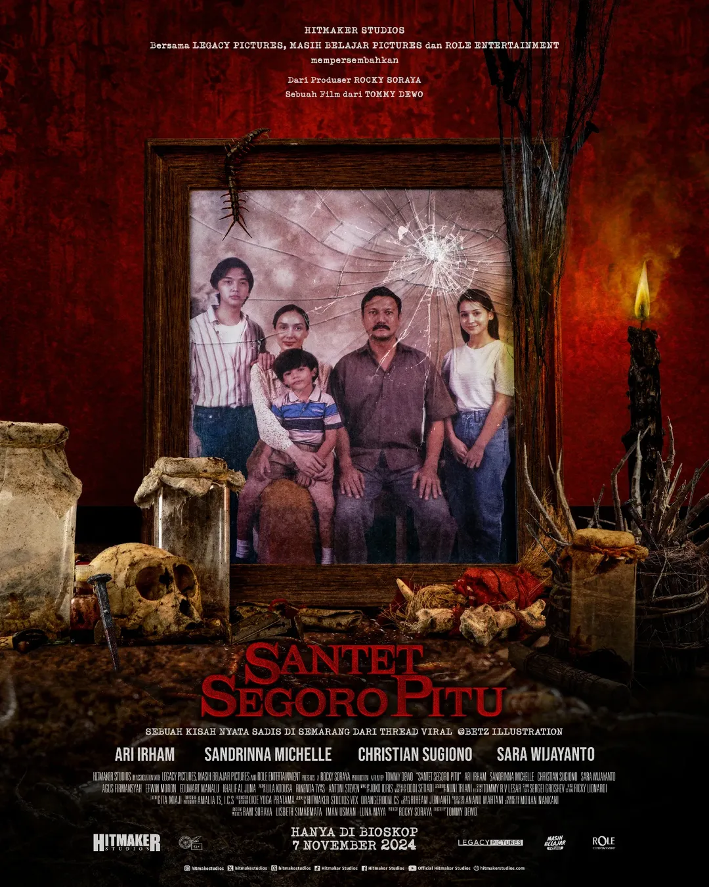

Santet Segoro pitu
-
Deskripsi Singkat: Film ini adalah horor Indonesia yang mengangkat kisah santet dengan latar budaya pesisir Jawa, khususnya kepercayaan tentang “Segoro Pitu” (tujuh lautan). Ceritanya menonjolkan unsur mistis, dendam, dan kekuatan ilmu hitam.
-
Aktor Pemeran Utama: Ari Irham, Sandrinna Michelle, Christian Sugiono
-
Pengarang Cerita: Erlangga Pratama
Sutradara: Azhar Kinoi Lubis
-
Rating:
-
Sinopsis: Cerita berfokus pada seorang pemuda yang hidupnya berubah setelah keluarganya terkena serangan santet yang berasal dari kekuatan gelap Segoro Pitu.
Gangguan yang awalnya kecil berubah menjadi teror mengerikan yang mengancam nyawa. Ia kemudian berusaha mencari tahu siapa dalang di balik santet tersebut dan bagaimana cara menghentikannya.
Dalam perjalanannya, ia harus berhadapan dengan kekuatan gaib yang jauh lebih besar dari yang ia bayangkan.